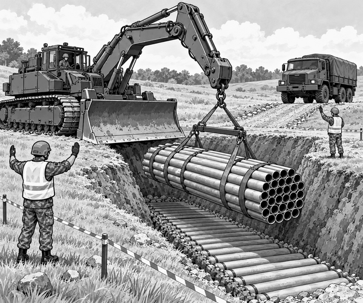

FACT
A deep ditch cut across the army training route.
It was too wide for a truck to cross.
It was too deep for a tank to drive through.
The Royal Engineers needed to make a road.
But they did not bring a bridge.
A huge tracked vehicle rumbled over the hill.
Its name was Trojan.
Trojan looked a little like a tank.
It had wide tracks and thick armour.
But there was no large gun turret.
Instead, it had a powerful digging arm.
It also had a broad blade at the front.
Vehicle fact: Trojan is an armoured engineering vehicle used by the British Army's Royal Engineers. It is built on the same kind of tracked base as a Challenger 2 tank.
Today, Trojan carried something else.
A giant round bundle rested behind its cab.
It was made from many strong pipes.
Thick bands held the pipes together.
The bundle was called a fascine.
The engineers stopped well before the ditch.
First, they measured the gap.
They checked the hard ground on both sides.
They marked the best place for the bundle.
Everyone moved outside the safe line.
One engineer stood where the driver could see him.
He gave a slow signal.
Trojan crept forwards.
The driver stopped at the marker.
The digging arm unfolded.
Its lifting hook held the fascine.
The great bundle rose.
It swung over the empty ditch.
The signaler lowered both hands.
The arm moved down.
Slowly.
Carefully.
Thump!
The fascine settled into the bottom.
Its many pipes filled the gap.
Fascine fact: A fascine is a bundle placed in a ditch so vehicles can cross. Hollow pipes can also let water keep flowing through the bundle.
The engineers inspected both ends.
The bundle sat firmly against the earth.
Now it was time to test the new path.
Trojan lined up with the ditch.
Its first track rolled onto the pipes.
The bundle pressed down, but stayed together.
The second track followed.
Trojan climbed onto the far bank.
It had crossed the gap.
The engineers checked the bundle again.
Then they waved the waiting supply truck forwards.
The truck rolled down onto the pipe road.
Its wheels crossed the ditch.
Soon it was safely on the other side.
A bundle had become a road.
Trojan had not needed to build a bridge.
It had simply carried the right tool for the gap.
1. What filled the practice ditch?
2. Why were the pipes hollow?
3. What crossed after Trojan?